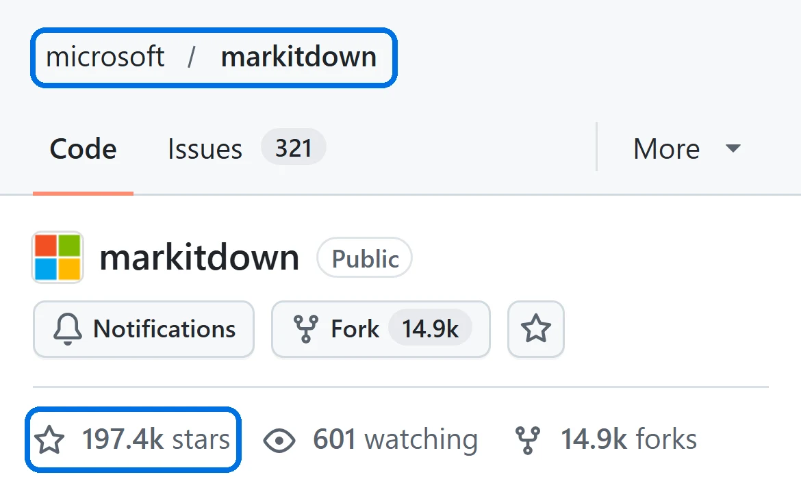

MarkItDown для Claude и ChatGPT
PDF в ИИ без лишних токенов
Зачем переводить файлы в Markdown
- Claude читает PDF дважды: текстом и картинкой каждой страницы. На страницу уходит от 1 500 до 3 000 токенов текста и до 1 568 на картинку
- ChatGPT читает в PDF и текст, и картинки: графики, схемы. Через API OpenAI в модель уходят текст и картинка каждой страницы
- В Markdown только текст и структура: заголовки, списки, таблицы. Картинок страниц нет, поэтому токенов уходит меньше
- MarkItDown переводит PDF, Word, Excel, PowerPoint, HTML, CSV и ссылки на YouTube
Что понадобится
- Компьютер на Windows или Mac
- Python 3.14. Поставим в шаге 1
- Claude Code, чтобы Claude переводил файлы сам (шаг 4). Без него переводишь ты, а файл подойдёт любому Claude
- Codex, чтобы он переводил файлы сам (шаг 4). Он есть даже в бесплатном ChatGPT. Без него переводишь ты, а файл подойдёт любому ChatGPT
- MarkItDown бесплатный, его сделали в Microsoft, лицензия MIT
Шаг 1 из 4
Поставь Python 3.14
Нужна именно 3.14: на самой новой версии, 3.15, MarkItDown пока не ставится
- Скачай Python 3.14 для Windows
- Запусти скачанный файл
- Внизу окна поставь галочку Add python.exe to PATH
- Нажми Install Now
- Скачай Python 3.14 для Mac
- Открой скачанный файл
- Нажимай «Продолжить», пока установка не закончится
Или одной командой в PowerShell
winget install -e --id Python.Python.3.14Проверка
- Открой PowerShell: нажми «Пуск» и набери PowerShell
- Открой Терминал: нажми Cmd и пробел, набери Терминал
- Вставь команду и нажми Enter
python --versionpython3 --versionPython 3.14.10. Последняя цифра может быть другойpy -3.14 -m pip вместо pippython3.14 -m pip вместо pip3Шаг 2 из 4
Поставь MarkItDown

Его сделали в Microsoft, у проекта 197 тысяч звёзд на GitHub
- Вставь команду в то же окно
- Нажми Enter и подожди пару минут
pip install "markitdown[all]"pip3 install "markitdown[all]"Проверка
markitdown --versionmarkitdown 0.1.9. Цифры могут быть новееШаг 3 из 4
Переведи файл и отдай ClaudeChatGPT
- Напиши в том же окне
markitdownи пробел - Перетащи PDF в окно: терминал сам допишет путь к файлу
- Допиши пробел и
-o otchet.md - Нажми Enter
- Прикрепи otchet.md в чат ClaudeChatGPT вместо PDF
markitdown otchet.pdf -o otchet.md# то, что получит ClaudeChatGPT
Отчёт о продажах за октябрь
Кофейня «Зерно», три точки в городе
Главное
Выручка выросла на 12%
Лучший день: суббота
Новая точка окупилась за 4 месяца
Шаг 4 из 4
Подключи MarkItDown к Claude CodeCodex
Тогда Claude сам переводит файл, когда ты даёшь путь к нему или ссылку
Codex входит в ChatGPT: это ИИ-агент от OpenAI. Подключишь MarkItDown, и он сам будет переводить файл, когда ты дашь путь к нему или ссылку
Поставь сервер
pip install markitdown-mcppip3 install markitdown-mcpПодключи к Claude CodeCodex
claude mcp add --scope user markitdown -- markitdown-mcpcodex mcp add markitdown -- markitdown-mcpAdded global MCP server 'markitdown'. Сервер подключится во всех твоих проектахПроверка
claude mcp list✔ Connectedcodex mcp listenabledЧто писать ClaudeCodex
Пиши обычным сообщением, с путём к файлу или ссылкой. Выбери ситуацию над окном
Выжимка из отчёта в PDF
Ответы примерные, у тебя ИИ скажет своими словами
Готово. Теперь ClaudeChatGPT получает только текст, и лимита хватает дольше
Если что-то пошло не так
Could not find a version that satisfies the requirement markitdown
MarkItDown не ставится на Python 3.15. Поставь Python 3.14 (шаг 1) и ставь через него: py -3.14 -m pip install "markitdown[all]"python3.14 -m pip install "markitdown[all]"
«pip» не является внутренней или внешней командой
Python поставился без галочки Add python.exe to PATH. Запусти установщик ещё раз, выбери Modify и включи эту галочку. Или поставь так: py -3.14 -m pip install "markitdown[all]"
error: externally-managed-environment
Так отвечает Python из Homebrew на Mac. Поставь Python 3.14 с python.org (шаг 1) и повтори: python3.14 -m pip install "markitdown[all]"
Файл .md пустой или почти пустой
Скорее всего, это скан: в PDF нет текста, только картинки страниц. MarkItDown читает текст, распознавать сканы он умеет только через плагин markitdown-ocr с платным ключом OpenAI
Таблицы из PDF пришли сплошным текстом
Так MarkItDown читает PDF. Если у тебя есть исходник в Word или Excel, переведи его: из них структура выходит точнее
Терминал пишет, что команды codex нет
Значит, Codex в терминале ещё не стоит. Поставь его по инструкции OpenAI, войди своим аккаунтом ChatGPT и повтори шаг 4
Codex прочитал файл сам, без markitdown
Codex умеет открывать файлы и без сервера. Чтобы файл ушёл через MarkItDown, напиши «через markitdown» и дай путь к файлу или ссылку, как в примерах выше
В claude mcp list у markitdown Failed to connect
Закрой окно терминала, открой новое и снова запусти claude mcp list. Если не помогло, подключи через Python: claude mcp add --scope user markitdown -- python -m markitdown_mcp, на Mac вместо python напиши python3
Claude прочитал файл сам, без markitdown
Файлы из скрепки в чате Claude читает сам, сервер их не перехватывает. Чтобы файл ушёл через MarkItDown, напиши «через markitdown» и дай путь к файлу или ссылку, как в примерах выше
Claude спрашивает разрешение вызвать markitdown
Это нормально: он показывает, какой файл хочет перевести. Разреши